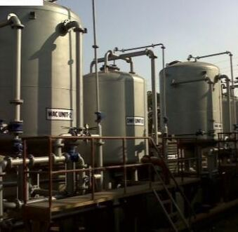
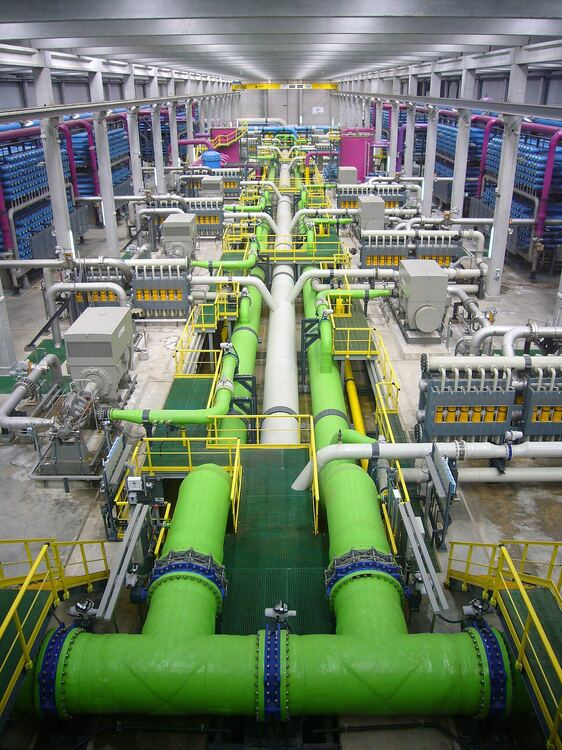

01 / Plants
Engineered treatment systems
Custom plants sized for feed water, process demand, treated-water quality and recovery targets.
See plants and their functions →Built around your process
Aqua Chem Labs specializes in the design, manufacturing, supply, erection, commissioning and maintenance of industrial water and wastewater treatment systems. Our work extends from raw-water treatment and process-water purification to effluent treatment, recycling, reuse and Zero Liquid Discharge.
Expertise in chemical engineering, applied water chemistry and process engineering allows us to configure every solution around feed-water characteristics, target quality, recovery, operating conditions and regulatory requirements—not around a standard catalogue.
Equipment manufacturing, chemical dosing, automation and after-sales support are integrated into one technically accountable solution.
Core expertise

Custom plants sized for feed water, process demand, treated-water quality and recovery targets.
See plants and their functions →
Application-led chemistry selected for the actual loading, metallurgy and operating envelope.
Explore chemical functions →
Compatible replacement components and consumables that protect output and reduce downtime.
View plant support →Plant manufacturing
Hover over a card or select it to reveal its operating function.
Treats industrial wastewater by removing suspended solids, oils, chemicals, COD/BOD and other process contaminants before discharge or reuse.
Uses biological and physical treatment to reduce organic matter, solids and pathogens in domestic sewage for safe disposal or reuse.
Forces water through selective membranes to reduce dissolved salts, hardness and contaminants for process-quality water.
Uses cation and anion exchange to remove dissolved minerals, producing low-conductivity water for boilers and precision processes.
Exchanges calcium and magnesium hardness for sodium to prevent scale in pipelines, heat exchangers and production equipment.
Membrane filtration removes fine suspended solids, colloids and microorganisms, often protecting downstream RO systems.
Layered sand, gravel and anthracite beds trap turbidity and suspended solids as the first stage of pre-treatment.
Adsorbs free chlorine, organics, colour and odour to protect membranes and resins and improve treated-water quality.
Fine cartridge elements capture residual particles before membranes, dosing points and critical process equipment.
Conditions feed water to control hardness, silica, oxygen and pH, protecting boilers against scale, carry-over and corrosion.
Controls scale, corrosion, fouling and microbiological growth so heat-transfer surfaces remain efficient and reliable.
Delivers water of a defined quality for manufacturing, washing, formulation and utility applications.
Upgrades treated effluent or sewage for reuse in cooling, gardening, flushing or process duties, reducing fresh-water demand.
Combines membrane recovery, concentration and evaporation to reuse water and eliminate liquid effluent leaving the facility.
Bespoke combinations of filtration, membrane and recovery technology engineered around a specific process challenge.
Every system can be engineered according to feed-water characteristics, process requirements, desired water quality, recovery targets, operating conditions and applicable regulatory requirements.
Water treatment chemicals
Hover or select a chemical family to understand its role.
Keep sparingly soluble salts dispersed so deposits do not block membrane surfaces or reduce recovery.
Acidic and alkaline programs remove mineral, organic and biological fouling during controlled CIP cleaning.
Destabilize fine particles and bind them into larger flocs for effective clarification, settling and dewatering.
Condition boiler water to control scale, sludge, alkalinity and carry-over for safe, efficient steam generation.
Combined programs that keep recirculating water free of scale, corrosion, fouling and microbiological growth.
Form protective films or control water chemistry to reduce metal loss in boilers and cooling circuits.
Hold hardness salts in solution so they do not deposit on heat-transfer surfaces and pipelines.
Control bacteria, algae and biofilm that cause fouling, odour, health risks and under-deposit corrosion.
Remove dissolved oxygen from boiler-feed water to protect metal surfaces against oxygen pitting.
Adjust acidity or alkalinity to optimize treatment reactions, protect assets and meet discharge limits.
Support biological and physico-chemical treatment with nutrients, cultures, decolourants and odour control.
Rapidly collapse unwanted process foam that interferes with aeration, separation and vessel capacity.
Dechlorination, preservation and sanitization products that extend membrane life between cleanings.
Tailored formulations developed for a particular process, contaminant profile or operating constraint.
Programs are selected according to water chemistry, operating parameters, contaminant loading, temperature, pH, TDS, hardness, silica, alkalinity, microbiological activity and system-specific requirements.

Genuine spares & plant support
Reliable operation depends on reliable components. We supply genuine and compatible industrial water-treatment plant spares and consumables to maintain plant performance and minimize unexpected downtime.
Hover over or tap a spare to see it.
Browse genuine plant spares →Complete lifecycle service
Complete support covering equipment positioning, piping, interconnections, chemical dosing systems, instrumentation, electrical integration and associated activities. Installation follows the approved engineering design and required operating parameters.
Professional testing, commissioning and start-up establish correct operation before handover.
Annual Maintenance Contracts and preventive maintenance support focus on:
Preventive Maintenance → Performance Monitoring → Chemical Optimization → Troubleshooting → Component Replacement → Process Improvement
Regular maintenance helps improve reliability, maintain water quality and reduce avoidable operating problems.
Serving industries across Madhya Pradesh
Supporting pharmaceuticals, food & beverage, dairy, chemicals, textiles, engineering, automotive, steel, cement, power, paper, distilleries, mining, manufacturing and other process industries.
Our quality commitment
We focus on international-quality engineering, reliable equipment, technically appropriate chemicals and professional service. From water analysis through design, manufacturing, installation, commissioning and maintenance, every decision is guided by quality, engineering, reliability, process efficiency, water chemistry and customer support.
“To establish Aqua Chem Labs as a leading global supplier and trusted industrial water treatment partner, delivering advanced water and wastewater technologies, specialty chemicals, genuine spares and professional lifecycle services in India and international markets.”
Our vision · Aqua Chem Labs
Our positioning
With our integrated capabilities in plant manufacturing, water treatment chemicals, genuine spares, erection, commissioning and annual maintenance, we aim to be recognized among the top industrial water treatment solution providers in India, with a strong presence in Madhya Pradesh and expanding global markets.
We strive to build the reputation of being among India’s top 10 industrial water treatment solution providers, a leader in water treatment, and a trusted global supplier of international-quality water and wastewater treatment solutions.
Engineering Water. Protecting Processes. Ensuring Compliance.